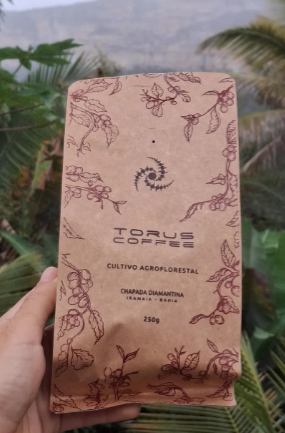
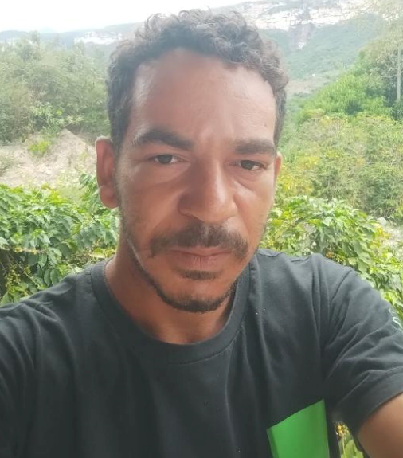
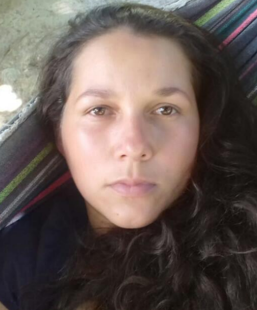
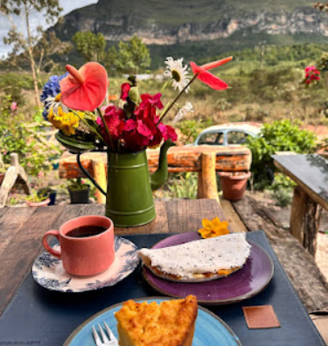
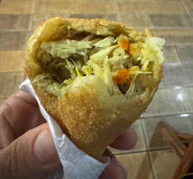
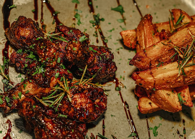

REFEIÇÕES POR ENCOMENDA
Delícias da Taliva
Cestas de café da manhã, almoços e jantares. Consulte cardápio, horários e entrega.
WhatsApp ↗+55 (77) 98150-6173Ver localização no Google Maps ↗GENTE QUE FAZ A REGIÃO ACONTECER
Contatos de guias, refeições por encomenda e compras locais para organizar sua estadia.
As refeições e os produtos locais são por encomenda. É necessário entrar em contato com os moradores e produtores com antecedência, de preferência antes da chegada, para confirmar a disponibilidade e combinar o pedido, os horários e a retirada ou entrega.
O Povoado da Raposa não possui mercado para as compras do dia a dia. Traga os itens essenciais da cidade antes da viagem.
CUIDADO E SABORES DA COMUNIDADE
Todas as opções de encomendas e compras desta seção são de moradores e produtores do próprio Povoado da Raposa. Ao comprar e encomendar com eles, você fortalece a economia local, valoriza o trabalho da comunidade e contribui para que a renda circule no povoado.
REFEIÇÕES POR ENCOMENDA
Cestas de café da manhã, almoços e jantares. Consulte cardápio, horários e entrega.
WhatsApp ↗+55 (77) 98150-6173Ver localização no Google Maps ↗COMIDA CASEIRA
Pães caseiros, almoços e jantares. Reserve com antecedência.
Cardápio ↗WhatsApp ↗+55 (77) 98138-1370Ver localização no Google Maps ↗PRODUTOS LOCAIS
Leite de vaca e carne, conforme disponibilidade.
WhatsApp ↗+55 (77) 98131-5732
O guia apresenta café Torus, geleia de mangaba, licor de jabuticaba, pizzas congeladas e linguiças artesanais. Pergunte à Nathália quais produtos estão disponíveis e confirme valores e forma de pagamento antes de consumir.
Consultar produtos com Nathália ↗CONHEÇA COM QUEM É DAQUI
Os contatos e roteiros abaixo vêm do guia da Cacau House. Confirme disponibilidade, valores, condições da trilha e o que está incluído diretamente com o profissional.

GUIA LOCAL · RAPOSA
Cachoeira do Fundão e pinturas rupestres.
WhatsApp ↗+55 (77) 98133-5129GUIA LOCAL · RAPOSA
Cachoeira do Fundão, Licuri e Raízes, e pinturas rupestres.
WhatsApp ↗+55 (77) 98131-5732GUIA · IBICOARA
Roteiros em Ibicoara, Mucugê e Andaraí.
WhatsApp ↗+55 (77) 98149-3344GUIA · IBICOARA
Cachoeiras do Buracão, Licuri e Fumacinha.
WhatsApp ↗+55 (77) 99145-6859
GUIA · IBICOARA
Cachoeiras do Buracão, Licuri e Fumacinha.
WhatsApp ↗+55 (77) 98140-5161UMA PARADA NO CAMINHO

CAMPO REDONDO
Na Estrada das Cachoeiras. O guia indica refeições e café da manhã por encomenda. Confirme funcionamento e localização antes de ir.
WhatsApp ↗+55 (71) 99247-9358@padocanocampo ↗
CAMPO REDONDO
Opção de salgados no caminho das cachoeiras do Buracão e da Fumacinha, na Estrada das Cachoeiras.
@coxinhadejaca_oficial ↗
CENTRO DE IBICOARA
Comida e drinks na Praça Ulisses Guimarães, 24. Consulte o perfil para horários e programação.
@mudra.gastrobar ↗Contatos transcritos do guia fornecido pela anfitriã. Serviços, produtos, horários e valores dependem de confirmação.
Seu tempo aqui começa com cuidado.
Próxima página: O que fazer →